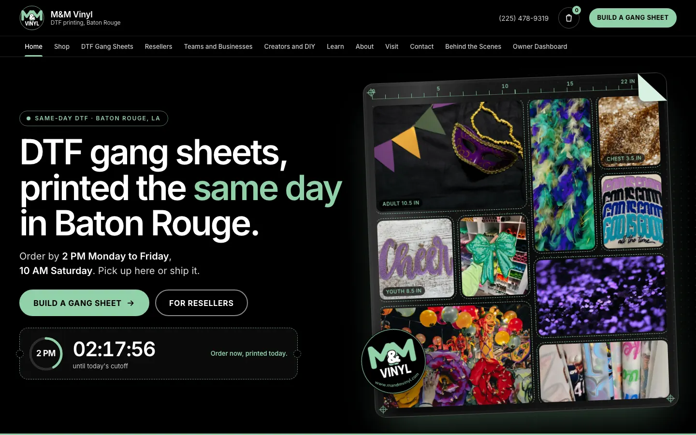
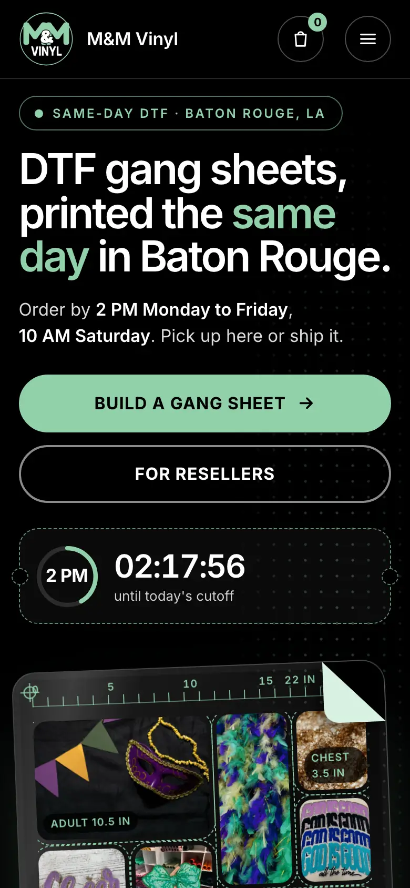
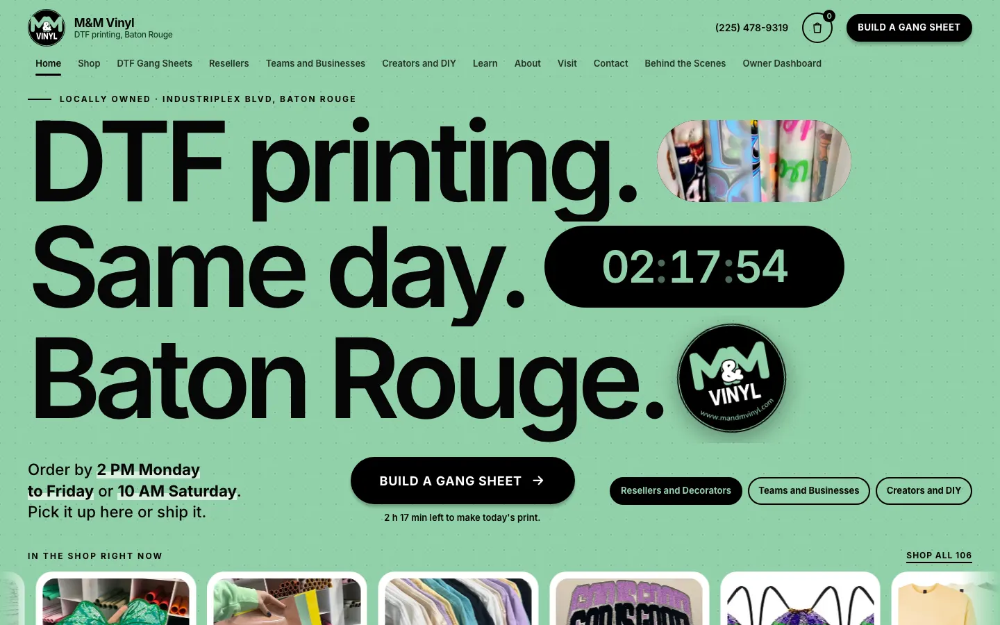
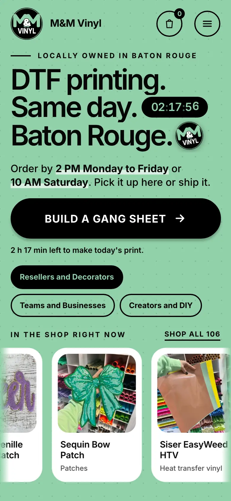
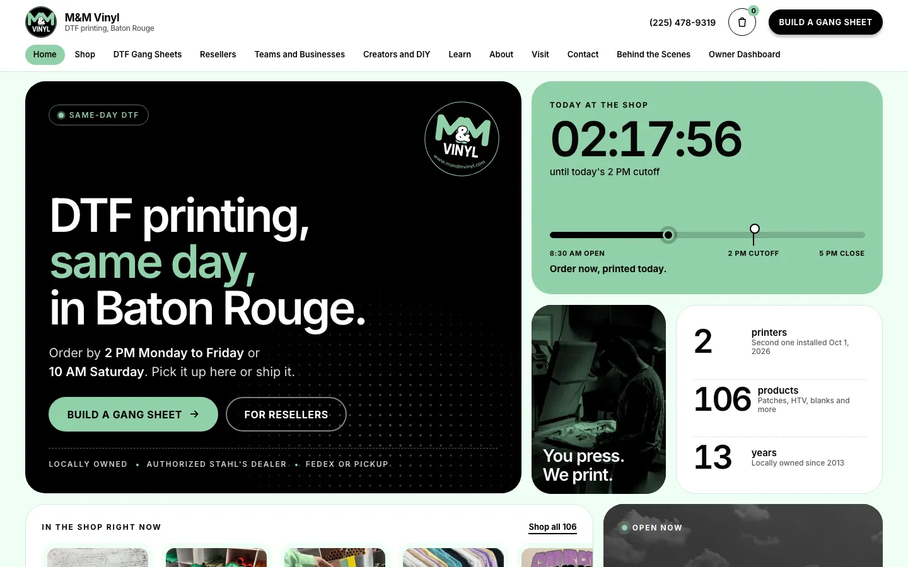
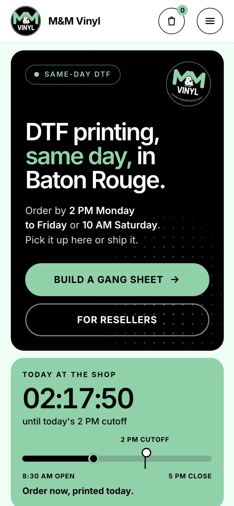

Each one says DTF printing, same-day, Baton Rouge, with the Build a Gang Sheet button and a live cutoff clock above the fold. All use her badge, her product photos, and her black and mint. Open any concept to see the motion.


What happens. A gang sheet prints itself from the top down with a print head sweep and a peeling corner. The cutoff clock sits beside it like a ticket stub.
Why it works. It shows what she sells in the first five seconds. Heaviest on images, so we trim it before it goes live.


What happens. An oversized headline with a photo of her DTF rolls, a rolling-digit clock and the badge set inside the words, then a product ticker.
Why it works. Bold, light, and strongest on a phone. A good fit for a seasonal Mardi Gras page.


What happens. A grid of tiles with a cursor spotlight: clock with a day timeline, counters, a swipe rail, and an open-now pickup tile.
Why it works. Carries the most at a glance and gives us a reusable system for the three doors and the rest of the site.
The ruler and size tags on the sheet in concept A are illustrative until Desiree confirms her roll width. No ratings or review counts are shown because none are on her site yet.